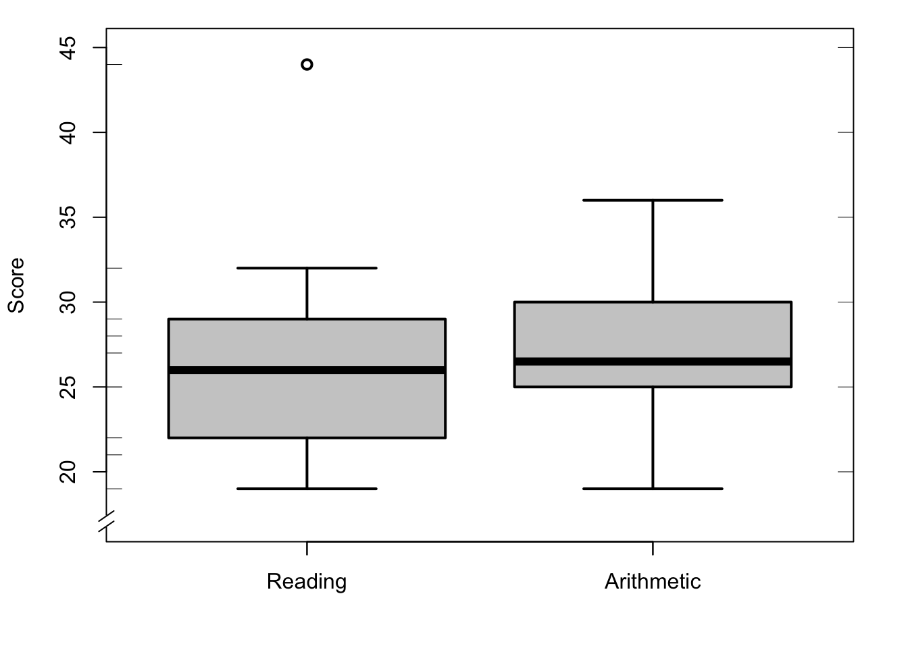

9 Centre and dispersion
9.1 Introduction
In the preceding chapter, we learnt to count and classify observations. These allow us to summarise a variable’s observations, for example in a table, a frequency distribution, or in a histogram. We can often summarise the observations even further, in characteristics which indicate the manner in which the observations are distributed. In this chapter we will acquaint ourselves with a number of such characteristics. Some of these characteristics are applicable to variables of all levels of measurement (e.g. mode), others only to variables of interval or ratio level (e.g. mean). After an introduction on using symbols, we will firstly discuss how we can describe the centre of a distribution, and how we can describe the dispersion.
9.2 Symbols
In descriptive statistics, much work is done with symbols. The symbols are abbreviated indications for a series of actions. You already know some of these symbols: the exponent \({}^2\) in the expression \(x^2\) is a symbol which means “multiply \(x\) with itself”, or \(x^2 = x \times x\) (where \(\times\) is also again a symbol).
Often a capital letter is used to indicate a variable (\(X\)), and a lower case letter is used to indicate an individual score of that variable. If we want to distinguish the individual scores, we do so with a subscript index: \(x_1\) is the first observation, \(x_2\) is the second observation, etc. As such, \(x_i\) indicates the score of participant number \(i\), of variable \(X\). If we want to generalise over all the scores, we can omit the index but we can also use a dot as an “empty” index: in the expression \(x_.\) the dot-index stands for any arbitrary index.
We indicate the number of observations in a certain group with a lower case \(n\), and the total number of observations of a variable with the capital letter \(N\). If there is only one group, like in the examples in this chapter, then it holds that \(n=N\).
In descriptive statistics, we use many addition operations, and for these there is a separate symbol, \(\sum\), the Greek capital letter Sigma, with which an addition operation is indicated. We could say “add all the observed values of the variable \(X\) to each other”, but we usually do this more briefly: \[\sum\limits_{i=1}^n x_i, \textrm{or even shorter} \sum x % \Sigma_i^N x_i, \textrm{or even shorter} \Sigma X\] This is how we indicate that all \(x_i\) scores have to be added to each other, for all values from \(i\) (from \(i=1\), unless indicated otherwise) to \(i=n\). All \(n\) scores of the variable \(x\) therefore have to be added up.
When brackets are used then pay good attention: actions described within a pair of brackets have priority, so you have to execute them first. Also when it is not strictly necessary, we will often use brackets for clarity, like in \((2\times3)+4=10\).
9.3 Central tendencies
9.3.1 mean
The best known measure for the centre of a distribution is the mean. The mean can be calculated straightforwardly by adding all scores to each other, and then dividing the sum by the number of observations. In symbols: \[\begin{equation} \overline{x} = \frac{\sum x}{n} = \frac{1}{n} \sum\limits_{i}^n x_i \tag{9.1} \end{equation}\]
Here we immediately encounter a new symbol, \(\overline{x}\), often named “x-bar”, which indicates the mean of \(x\). The mean is also often indicated with the symbol \(M\) (mean), amongst others in articles in the APA-style.
Example 9.1: In a shop, it is noted how long customers have to wait at the checkout before their turn comes. For \(N=10\) customers, the following waiting times are observed, in minutes:
1, 2, 5, 2, 2, 2, 3, 1, 1, 3.
The mean waiting time is \((\sum X)/N = 22/10 = 2.2\) minutes.
The mean of \(X\) is usually expressed with one decimal figure more than the scores of \(X\) (see also §9.6.1 below about the number of significant figures with which we represent the mean).
The mean can be understood as the “balance point” of a distribution: the observations on both sides hold each other “in equilibrium”, as illustrated in Figure 9.1, where the “blocks” of the histogram are precisely “in equilibrium” at the “balance point” of the mean of 2.2. The mean is also the value relative to which the \(N\) observations together differ the least, and therefore forms a good characteristic for the centre of a probability distribution.
The mean can only be used with variables of the interval or ratio level of measurement.
Figure 9.1: Histogram of N=10 waiting times, with the mean marked.
9.3.2 median
The median (symbol \(Md\) or \(\tilde{x}\)) is the observation in the middle of the order of observations.11 When we sort the scores of \(X\) from smallest to largest, the median is the midpoint of the sorted sequence. Half of the observations are smaller than the median, and the other half is larger than the median.
For an odd number of observations, the middlemost observation is the median. For an even number of observations, the median is usually formed from the mean of the two middlemost observations.
Example 9.2: The waiting times from Example 9.1 are ordered as follows:
1, 1, 1, 2, 2, 2, 2, 3, 3, 5.
The median is the mean of the two middlemost (italicised) observations, so 2 minutes.
The median is less sensitive than the mean to extreme values of \(x\). In the above example, the extreme waiting time of 5 minutes has a considerable influence on the mean. If we remove that value, then the mean changes from 2.2 to 1.9 but the median is still 2. Extreme values thus have less great an influence on the median then on the mean. Only if the ordering of the observations changes, may the median also change.
The median can be used with variables of ordinal, interval or ratio level of measurement.
9.3.3 mode
The mode (adj. ‘modal’) is the value or score of \(X\) which occurs the most frequently.
Example 9.3: In the waiting times from Example 9.1 the score 2 occurs the most often (\(4\times\)); this is the mode.
Example 9.4: In 2018, the mean income per household in the Netherlands was €29,500. The modal income (per household) was between €18,000 and €20,00012. As such, in 2018, most households in the Netherlands fell within this income class.
The mode is even less sensitive than the mean to extreme values of \(x\). In the Example 9.2 above, it does not matter what the value of the longest waiting time is: even if that observation has the value \(10\) or \(1,000\), the mode remains invariably \(2\) (check it for yourself).
The mode can be used with variables of all levels of measurement.
9.3.4 Harmonic mean
If the dependent variable is a fraction or ratio, like the speed with which a task is conducted, then the (arithmetic) mean of formula (9.1) does not actually provide a good indication for the most characteristic or central value. In that case, it is better for you to use the harmonic mean:
\[\begin{equation} H = \frac{1}{\frac{1}{n} \sum\limits_{i}^n \frac{1}{x_i} } = \frac{n}{\sum\limits_{i}^n \frac{1}{x_i}} \tag{9.2} \end{equation}\]
Example 9.5: A student writes \(n=3\) texts. For the first text (500 words) (s)he takes 2.5 hours, for the second text (1,000 words) (s)he takes 4 hours, and for the third text (300 words) (s)he takes 0.6 hours. What is this student’s mean speed of writing? The speeds of writing are respectively 200, 250 and 500 words per hour, and the “normal” (arithmetic) mean of these is 317 words per hour. Nevertheless, the “actual” mean is \((500+1000+300)/(2.5+4+0.6)\) \(=1800/7.1=254\) words per hour. The high writing speed of the short text counts for \(1/n\) parts in the arithmetic mean, even though the text only contains \(300/1,800=1/6\) of the total number of words.
Since the dependent variable is a fraction (speed, words/hour), the harmonic mean is a better central tendency. We firstly convert the speed (words per time unit) into its inverse (see (9.2), in denominator, within sum sign), i.e. to time per word: 0.005, 0.004, and 0.002 (time units per word, see footnote13). We then average these times, to a mean of 0.00366 hours per word, and finally we again take the inverse of this. The harmonic mean speed of writing is then \(1/0.00366=273\) words per hour, closer to the “actual” mean of 254 words per hour.
9.3.5 winsorized mean
The great sensitivity of the normal (arithmetic) mean for outliers can be restricted by changing the most extreme observations into less extreme, more central observations. The mean of these (partially changed) observations is called the winsorized mean.
Example 9.6: The waiting times from Example 9.1 are ordered as follows:
1, 1, 1, 2, 2, 2, 2, 3, 3, 5.
For the 10% winsorized mean, the 10% of smallest observations (by order) are made to equal the first subsequent larger value, and the 10% of largest observations are made to equal the last preceding smaller value (changed values are italicised here):
1, 1, 1, 2, 2, 2, 2, 3, 3, 3.
The winsorized mean over these changed values is \(\overline{x}_w=2\) minutes.
9.3.6 trimmed mean
An even more drastic intervention is to remove the most extreme observations entirely. The mean of the remaining observations is called the trimmed mean. For a 10% trim, we remove the lowermost 10% and the uppermost 10% of the observations; as such, what remains is then only \((1- (2 \times (10/100))\times n\) observations (Wilcox 2012).
Example 9.7: The waiting times from Example 9.1 are again ordered as follows:
1, 1, 1, 2, 2, 2, 2, 3, 3, 5.
For the 10% trimmed mean, the 10% of smallest observations (by order) are removed,
and likewise the 10% of largest observations are removed:
1, 1, 2, 2, 2, 2, 3, 3.
The trimmed mean over these \(10-(.2)(10)=8\) remaining values here is \(\overline{x}_t=2\) minutes.
9.3.7 comparison of central tendencies
Figure 9.2 illustrates the differences between the various central tendencies, for asymmetrically distributed observations.
Figure 9.2: Histogram of a variable with positively skewed (asymmetric) frequency distribution, with (1) the median, (2) the 10% trimmed mean, (3) the 10% winsorized mean, and (4) the arithmetic mean, indicated. The observed scores are marked along the horizontal axis.
The arithmetic mean is the most sensitive to extreme values: the extreme values “pull” very hard at the mean. This influence of extreme values is tempered in the winsorized mean, and tempered even more in the trimmed mean. The higher the trim factor (the percentage of the observations that have been changed or removed), the more the winsorized and trimmed means will look like the median. Indeed, with a trim factor of 50%, out of all the observations, only one (unchanged) observation remains, and that is the median (check it for yourself). In §9.7 we will look further into the choice for the appropriate measure for the centre of a distribution.
9.4 Quartiles and boxplots
The distribution of a variable is not only characterised by the centre of the distribution but also by the degree of dispersion around the centre, i.e. how large the difference is between observations and the mean. For instance, we not only want to know what the mean income is but also how large the differences in income are.
9.4.1 Quartiles
Quartiles are a simple and useful measure for this (Tukey 1977). We split the ordered observations into two halves; the dividing line between these is the median. We then halve each of these halves again into quarters. The quartiles are formed by the dividing lines between these quarters; as such, there are three quartiles. The first quartile \(Q_1\) is the lowermost half’s median, \(Q_2\) is the median of all \(n\) observations, and the third quartile \(Q_3\) is the uppermost half’s median. Half of the observations (namely the second and third quarters) are between \(Q_1\) and \(Q_3\). The distance between \(Q_1\) and \(Q_3\) is called the “interquartile range” (IQR). This IQR is a first measure which can be used for the dispersion of observations with respect to their central value.
To illustrate, we use the fictive reading test scores shown in Table 9.1.
| Pupil | Reading | Arithmetic | Geography |
|---|---|---|---|
| 1 | 18 | 22 | 55 |
| 2 | 32 | 36 | 55 |
| 3 | 45 | 34 | 38 |
| 4 | 25 | 25 | 40 |
| 5 | 27 | 29 | 48 |
| 6 | 23 | 20 | 44 |
| 7 | 29 | 27 | 49 |
| 8 | 26 | 25 | 42 |
| 9 | 20 | 25 | 57 |
| 10 | 25 | 27 | 47 |
| \(\sum x\) | 270 | 270 | 475 |
| \(\overline{x}\) | 27.0 | 27.0 | 47.5 |
Example 9.8: The scores for the reading section in Table 9.1 are ordered as follows:
18, 20, 23, 25, 25, 26, 27, 29, 32, 45.
The median is \(Q_2=25.5\) (between the 5th and 6th observation in this ranked list). The median of the lowermost half is \(Q_1=23\) and that of the uppermost half is \(Q_3=29\). The interquartile range is \(\textrm{IQR}=29-23=6\).
9.4.2 Outliers
In the reading scores in Table 9.1, we encounter one extreme value, namely the score 45, which differs markedly from the mean. A marked value like this is referred to as an “outlier”. The limit for what we consider to be an outlier generally lies at \(1.5 \times \textrm{IQR}\). If a value is more than \(1.5 \times \textrm{IQR}\) above or under \(Q_1\), we consider that observation to be an outlier. Check these observations again (recall the principle of diligence, see §3.1).
Example 9.9: For the aforementioned reading scores in Table 9.1, we found \(Q_1=23\), \(Q_3=29\), and \(\textrm{IQR}=Q_3-Q_1=29-23=6\). The uppermost limit value for outliers is \(Q_3 + 1.5 \times \textrm{IQR} = 29 + 1.5 \times 6 = 29+9 = 38\). The observation with the score 45 is above this limit value, and is therefore considered to be an outlier.
9.4.3 Boxplots
We can now show the frequency distribution of a variable with five characteristics, the so-called “five-number summary”, namely the minimum value, \(Q_1\), median, \(Q_3\), and maximum value. These five characteristics are represented graphically in a so-called “boxplot”, see Figure 9.3 for an example (Tukey 1977, sec. 2C).
Figure 9.3: Boxplots of the scores of \(N=10\) pupils on the Reading and Arithmetic sections of the CITO test (see Table 9.1), with outliers marked as open circles. The observed scores are marked along the vertical axes.
The box spans (approximately) the area from \(Q_1\) to \(Q_3\), and thus spans the central half of the observations. The thicker line in the box marks the median. The lines extend to the smallest and largest values which are not outliers.14 The separate outliers are indicated here with a distinct symbol.
9.5 Measures of dispersion
9.5.1 Variance
Another way to show the dispersion of observations would be to look at how each observation deviates from the mean, thus \((x_i-\overline{x})\). However, if we add up all the deviations, they always total zero! After all, the positive and negative deviations cancel each other out (check that out for yourself in Table 9.1). Instead of calculating the mean of the deviations themselves, we thus calculate the mean of the squares of those deviations. Both the positive and negative deviations result in positive squared deviations. We then calculate the mean of all those squared deviations, i.e. we add them up and divide them by \((n-1)\), see Footnote15. We call the result the variance, indicated by the symbol \(s^2\): \[\begin{equation} s^2 = \frac{ \sum (x_i - \overline{x})^2 } {n-1} \tag{9.3} \end{equation}\]
The numerator of this fraction is referred to as the “sum of squared deviations” or “sum of squares” (SS) and the denominator is referred to as the number of “degrees of freedom” of the numerator (d.f.; see §13.2.1).
Nowadays, we always calculate the variance with a calculator or computer.
9.5.2 standard deviation
To calculate the above variance, we squared the deviations of the observations. As such, the variance is a quantity which is not expressed in the original units (e.g. seconds, cm, score), but in squared units (e.g. \(\textrm{s}^2\), \(\textrm{cm}^2\), \(\textrm{score}^2\)). In order to return to the original units, we take the square root of the variance. We call the result the standard deviation, indicated by the symbol \(s\):
\[\begin{equation} s = \sqrt{s^2} = \sqrt{ \frac{ \sum (x_i - \overline{x})^2 } {n-1} } \tag{9.4} \end{equation}\]
Example 9.10: The mean of the previously stated reading scores in Table 9.1 is \(27.0\), and the deviations are as follows:
-9, 5, 18, -2, 0, -4, 2, -1, -7, -2.
The squared deviations are 81, 25, 324, 4, 0, 16, 4, 1, 49, 4.
The sum of these squared deviations is 508, and the variance is \(s^2=508/9=56.44\). The standard deviation is the root of the variance, thus \(s=\sqrt{508/9}=7.5\).
The variance and standard deviation can only be used with variables of the interval or ratio level of measurement. The variance and standard deviation can also be based again on the winsorized or trimmed collection of observations.
We need the standard deviation (a) when we want to convert the raw observations to standard scores (see §9.8 below), (b) when we want to describe a variable which is normally distributed (see §10.3, and (c) when we want to test hypotheses with the help of a normally distributed variable (see §13.2 et seq.).
9.5.3 MAD
Besides standard deviation, there is also a robust counterpart which does not use the mean. This measure is therefore less sensitive for outliers (robuster), which is sometimes useful.
For this, we look for the deviation of every observation from the median (not the mean). We then take the absolute value of these deviations16 (not the square). Finally, we determine again the median of these absolute deviations (not the mean). We call the result the “median absolute deviation” (MAD): \[\begin{equation} \textrm{MAD} = k ~~ Md ( |x_i - Md(x) |) \tag{9.5} \end{equation}\]
We normally use \(k=1.4826\) as a constant here; with this scale factor the MAD usually roughly matches the standard deviation \(s\), if \(x\) is normally distributed (§10.3).
Example 9.11: The median of the previously mentioned reading scores in Table 9.1 is 25.5, and the deviations from the median are as follows:
-7.5, 6.5, 19.5, -0.5, 1.5, -2.5, 3.5, 0.5, -5.5, -0.5.
The ordered absolute deviations are
0.5, 0.5, 0.5, 1.5, 2.5, 3.5, 5.5, 6.5, 7.5, 19.5.
The median of these 10 absolute deviations is 3, and \(\textrm{MAD} = 1.4826 \times 3 = 4.4478\). Notice that the MAD is smaller than the standard deviation, amongst others because the MAD is less sensitive for the extreme value \(x_3=45\).
9.6 On significant figures
9.6.1 Mean and standard deviation
A mean result is shown in a limited number of significant figures, i.e. a limited number of figures, counted from left to right, ignoring the decimal place. The mean result’s number of significant figures must be equal to the number of significant figures of the number of observations from which the mean is calculated. (Other figures in the mean result are not precisely determined.) The mean result must firstly be rounded to the appropriate number of significant figures, before the result is interpreted further, see Table 9.2.
| Num.obs. | Num.signif.figures | example mean | reported as |
|---|---|---|---|
| \(1\dots9\) | 1 | 21/8 = 2.625 | 3 |
| \(10\dots99\) | 2 | 57/21 = 2.714286 | 2.7 |
| \(100\dots999\) | 3 | 317/120 = 2.641667 | 2.64 |
| \(1000\dots9999\) | 4 | 3179/1234 = 2.576175 | 2.576 |
The number of significant figures in the reported standard deviation is the same as in the mean, in accordance with Table 9.2.
9.6.1.1 Background
Let us assume that I have measured the distance from my house to my work along a fixed route a number of times. The mean of those measurements supposedly amounts to \(2.954321\) km. By reporting the mean with 7 figures, I am suggesting here that I know precisely that the distance is \(2954321\) millimetres, and at most \(1\) mm more or less: the last figure is estimated or rounded off. The number of significant figures (in this example 7) indicates the degree of precision. In this example, the suggested precision of 1 mm is clearly wrong, amongst other reasons because the start point and end point cannot be determined within a millimetre. It is thus usual to report the mean of the measured distance with a number of significant figures which indicates the precision of those measurements and of the mean, e.g. \(3.0\) km (by car or bike) of \(2.95\) km (by foot).
The same line of thought is applicable when measuring a characteristic by means of a survey question. With \(n=15\) respondents, the average score might be \(43/15 \approx 2.86667\). However, the precision in this example is not as good as this decimal number suggests. In fact, here one deviant answer already brings about a deviation of \(\pm0.06667\) in the mean. Besides, a mean score is always the result of a division operation, and “[for] quantities created from measured quantities by multiplication and division, the calculated result should have as many significant figures as the measured number with the least number of significant figures.”17 In this example, the mean’s numerator (\(43\)) and its denominator (\(15\)) both consist of 2 significant figures. The mean score should be reported as \(2.9\) points, with only one figure after the decimal point.
9.6.2 Percentages
A percentage is a fraction, multiplied by \(100\). Use and report a rounded off percentage (i.e. two significant figures) only if the fraction’s numerator is larger than 100 (observations, instances). If the numerator is smaller than 100 (observations, instances), then percentages are misleading, see Table 9.3.
| num.obs.(denominator) | num.signif.figures | example fraction | report as |
|---|---|---|---|
| \(1\dots9\) | 1 | 3/8 = 0.4 | 3/8 |
| \(10\dots99\) | 2 | 21/57 = 0.36 | 21/57 |
| \(100\dots999\) | 3 | 120/317 = 0.378 | 38% |
| \(1000\dots9999\) | 4 12 | 34/3179 = 0.3882 | 38.8% |
9.6.2.1 Background
The rules for percentages arise from those in §9.6.1 applied to division operations. If the denominator is larger than 100, the percentage (with two significant figures) is the result of a scaling “down” (from a denominator larger than 100 to a denominator of precisely 100 percentage points). The percentage scale is less precise than the original ratio; the percentages are rounded off to two significant figures; the percentage’s last significant figure is thus secured.
However, if the denominator is smaller than 100, then the percentage (with two significant figures) is the result of a “scaling upwards” (from a denominator smaller than 100 to a denominator of exactly 100 percentage points). The percentage scale then suggests a pseudo-precision which was not present in the original fraction, and the precision of the percentage scale is false. As such, if the denominator is smaller than 100, percentages are misleading.
Example 9.12: In a course of 29 students, 23 students passed. In this case, we often speak of a course return of \(23/29=\) 79%. However, a rendering as a percentage is misleading in this case. To see this, let us look at the 6 students who failed. You can reason that the number of 6 failed students has a rounding error of \(1/2\) student(s); when converted to the percentage scale this rounding error is also thereby increased so that the percentages are less precise than the whole percentages (2 significant figures) suggest. Or put otherwise: the number of 6 failed students (i.e. a number with one significant figure) means we have to render the proportion with only one significant figure, and thus not as a percentage. It is preferable to report the proportion itself (\(23/29\)), or the “odds” (\(23/6=4\)) rounded off to the correct number of significant figures18.
On the basis of the same considerations, a percentage with one decimal place (i.e. with three significant figures, e.g. “36.1%”) is only meaningful if the ratio or fraction’s denominator is larger than 1000.
Example 9.13: In 2013, 154 students began a two-year research master’s degree. After 2 years, 69 of them had graduated. The nominal return for this cohort is thus \(69/154=\) 0.448052, which should be rounded off and reported as 44% (not as 44.81%).
9.7 Making choices
You can describe the distribution of a variable in various manners. If variable \(X\) is measured on the interval or ratio level of measurement, always begin with a histogram (§8.4) and a boxplot (§9.4.3).
The centre measures and dispersion measures can be arranged as in Table 9.4.
| Distribution | Centre measure | Dispersion measure |
|---|---|---|
| all | median | quartiles, IQR, MAD |
| … | trimmed or wins. mean | trimmed or wins.std.dev. |
| (a & b & c) | mean | standard deviation |
The most robust measures are at the top (median, quartiles, IQR, MAD). These measures are robust: they are less sensitive for outliers or for potential asymmetry in the frequency distribution, as the examples in this chapter show.
The most efficient measures are at the bottom of Table 9.4: mean and standard deviation. These measures are efficient: they represent the centre and the dispersion the best, they have themselves the smallest standard deviation, and they need the (relatively) smallest number of observations for this. The other measures occupy a between position: the trimmed measures are somewhat more robust, and the winsorized measures somewhat more efficient.
However, the most efficient measures also demand the furthest reaching assumptions (and the most robust measures demand the fewest assumptions). These efficient measures are only meaningful if the distribution of \(X\) satisfies three assumptions: (a) the distribution is more or less symmetrical, i.e. the left and right halves of the histogram and the uppermost and lowermost halves of the boxplot look like each other’s mirror image, (b) the distribution is unimodal, i.e. the distribution has a unique mode, and (c) the distribution contains no or hardly any outliers. Inspect these assumptions in the histogram and the boxplot of \(X\). If one of these assumptions is not satisfied, then it is better to use more robust measures to describe the distribution.
9.8 Standard scores
It can sometimes be useful to compare scores which are measured on
different scales. Example: Jan got an 8 as his final grade for
maths at Dutch secondary school, and his IQ is 136. Is the deviation of Jan with
respect to the mean as large on both of the scales? To answer a question
like this, we have to express the scores of the two variables on the
same measurement scale. We do so by converting the raw scores to
standard scores, or z-scores. For this, we take the deviation of every
score with respect to the mean, and we divide the deviation by the
standard deviation:
\[\begin{equation} z_i = \frac{(x_i-\overline{x})}{s_x} \tag{9.6} \end{equation}\]
The standard score or z-score thus represents the distance of the \(i\)’the observation to the mean of \(x\), expressed in units of standard deviation. For a standard score of \(z=-1\), the observed score is precisely \(1 \times s\) below the average \(\overline{x}\). For a standard score of \(z=+2\), then the observed score is precisely \(2 \times s\) above the mean19.
Z-scores are also useful for comparing two variables which are in fact measured on the same scale (for example, a scale of \(1 \dots 100\)), but which nevertheless have different means and/or standard deviations, like the scores in Tabel 9.1. In Chapter 10, we will work more with z-scores.
The standard score or z-score has two useful characteristics which you should remember. Firstly, the mean is always equal to zero: \(\overline{z}=0\), and, secondly, the standard deviation is equal to 1: \(s_z = 1\). (These characteristics follow from the definition in formula (9.6); we omit the mathematical proof here.) Thus, transformation from a collection of observations to standard scores or z-scores always yields a distribution with a mean of zero and a standard deviation of one. Do remember that this transformation to standard scores is only meaningful, provided that and to the extent that the mean and the standard deviation are also meaningful measures to describe the distribution of \(x\) (see §9.7).
9.9 SPSS
For histogram, percentiles and boxplot:
Analyze > Descriptive Statistics > Explore...Select variable (drag to Variable(s) panel)
Choose Plots, tick: Histogram, and confirm with Continue
Choose Options, tick: Percentiles, and confirm with Continue and
afterwards with OK.
The output comprises descriptive statistics and histogram and
boxplot.
For descriptive characteristic values:
Analyze > Descriptive Statistics > Descriptives...Select variable (drag to Variable(s) panel)
Choose Options; tick:
Mean, Sum, Std.deviation, Variance, Minimum, Maximum, and confirm with
Continue and afterwards with OK.
The output comprises the requested statistical characteristics of the variable’s distribution.
For median:
Analyze > Compare Means > Means...Select variable (drag to Variable(s) panel)
Choose Options; tick:
Mean, Number of cases, Standard deviation, Variance, Minimum, Maximum
and also Median, and confirm with Continue and afterwards with OK.
The output comprises the requested statistical characteristics of the variable’s distribution.
Calculate and save Standard scores in a new column:
Analyze > Descriptive Statistics > Descriptives...Select variables (drag to Variable(s) panel)
Tick: Save standardized values as variables and confirm with OK.
The new variable(s) with z-scores are added as new
column(s) to the data file.
9.10 JASP
For histogram and boxplot:
From the top bar, choose
DescriptivesSelect the variable(s) to summarize and place them into the field “Variables”. Open the “Plots” field and check the option Distribution plots (under the heading “Basic plots”) to obtain a histogram or bar chart (depending on the measurement level).
If desired, check the option Boxplots (with Boxplot element) under the heading “Customizable plots”.
For summary numbers and quantiles:
From the top bar, choose
DescriptivesSelect the variable(s) to summarize and place them into the field “Variables”. Open the “Statistics” field and check the option Quartiles (under the heading “Percentile values”) to obtain quartiles.
Other quantiles are also possible: check the option Cut points for: and enter a number, e.g. 6 will produce sextiles. If you want to know a specific percentile, e.g. the 17th percentile, check the option Percentiles: and enter the desired percentile value (here 17).
For summaries of central tendency and dispersion, check the options (under the heading “Central Tendency”) for Mean, Median, Mode en Sum , as well as those (under the heading “Dispersion”) for Variance, Std.deviation, MAD Robust (with constant value fixed at 1; see Eq.(9.5) above), IQR, Minimum and Maximum . This will produce a summary table showing the requested descriptive statistics of the variable(s).
In JASP, a column of standard scores can be created by first creating a new variable (column) and subsequently filling that column with standard scores.
To create a new variable, click on the + button to the right of the last column name in the data tab. A “Create Computed Column” panel appears, where you can enter a name for the new variable, e.g. Lezen_Z. You can also choose between R and a pointer. These are the two options in JASP to define formulas with which the new (empty) variable is filled; using R code, or manually using JASP. The paragraphs below explain how standard scores can be computed using these two options. Finally, you can check which measurement level the new variable should be (see Chapter 4). For standard scores, you can leave this at Scale. Next, click on Create Column to create the new variable. The new variable (empty column) appears as the rightmost variable in the data set.
If the R option is chosen to define the new variable, a field with “#Enter your R code here :)” appears above the data. Here you can enter R code (see below) that produces standardized values.
This snippet of R code produces standard scores of the variable Lezen:
((Lezen - mean(Lezen)) / sd(Lezen))Enter this R code, and click on the button Compute column below the work sheet to fill the empty variable.
If the pointer or manual option is chosen to define the new variable, a work sheet will appear above the data. To the left of the work sheet are the variables, above it are math symbols, and to the right of the work sheet are several functions. From those functions you can pick the ones required to compute standard scores. If something goes wrong, items on the work sheet can be erased by dragging them to the trash bin on the lower right bottom. After you have completed the specification on the work sheet, then click on the button Compute column under the work sheet, to fill the new variable with the generated numbers.
Drag the variable to convert into the empty sheet. Pick function mean(y) from the right.
Drag the variable to convert to “values”. Pick \(\div\) from the math symbols at the top.
Pick the function \(\sigma\)_y from the right and drag it to the denominator part of the fraction (below the fraction bar). For this function too, drag the variable to convert to “values”.
Eventually the definition of standard scores (here for variable named Lezen) should look like this: \[\frac{(Lezen-mean(Lezen))}{\sigma (Lezen)}\]
Click on the button Compute column below the work sheet to fill the empty variable with the newly computed standard scores.
9.11 R
For quartiles and boxplot like Figure 9.3, we use the commands fivenum, quantile, and boxplot:
require(foreign) # for foreign::read.spss
cito <- read.spss("data/cito.sav")
# Columns in `cito.sav` have Dutch names:
# in Dutch: Leerling Lezen Rekenen Wereldorientatie stadplat rek.f
# in English: Pupil Reading Arithmetic Geography UrbRural Arith.factor
fivenum(cito$Lezen) # minimum, Q1, median, Q3, maximum## [1] 19 22 26 29 44quantile(cito$Lezen, c( 1/4, 3/4 ) ) # Q1 and Q3, calculated differently ## 25% 75%
## 22.75 28.75op <- par(mar=c(4,4,1,2)+0.1) # smaller margins
with(cito,
boxplot(Lezen, Rekenen, col="grey80", lwd=2, lty=1, ylab="Score", ylim=c(17,45) )
)
axis(side=1, at=c(1,2), labels=c("Reading","Arithmetic") )
plotrix::axis.break(axis=2) # break in left Y-aixs
rug(cito$Lezen, side=2) # markings on left Y-axis
rug(cito$rekenen, side=4) # markings on right Y-axis
Many central tendencies are pre-programmed as functions in R:
mean(cito$Lezen) # mean## [1] 27.2psych::winsor.mean(cito$Lezen, trim=.1) # winsorized mean, from psych package## [1] 26.3mean(cito$Lezen, trim=.1) # trimmed mean## [1] 26.125median(cito$Lezen) # median## [1] 26Various dispersion measures are also pre-programmed:
var(cito$Lezen) # variance## [1] 50.17778sd(cito$Lezen) # standard deviation, sd(x) = sqrt(var(x))## [1] 7.083627mad(cito$Lezen) # MAD## [1] 5.1891In contrast, we have to calculate standard scores ourselves, and save them ourselves as a
new variable, called here zReading (note the parentheses in the first command line):
# standardized (or z) reading scores
zReading <- (cito$Lezen-mean(cito$Lezen)) / sd(cito$Lezen)
head(zReading) # first few observations of variable zReading## [1] -1.1575990 0.6776189 2.3716662 -0.3105753 0.1129365 -0.7340872References
Tukey, John W. 1977. Exploratory Data Analysis. Reading, MA: Addison-Wesley.
Wilcox, Rand R. 2012. Introduction to Robust Estimation and Hypothesis Testing. 3rd ed. Burlington: Elsevier.
In American English, the strip of ground in the middle of a road is called the “median (strip)” (British English: “central reservation”); this strip splits the road into two equally large halves.↩︎
This is comparable with sports like rowing, swimming, cycling, ice skating, etc., where the time over an agreed distance is measured and compared, rather than the speed over an agreed time.↩︎
In a classic boxplot, the lines extend to the minimum and maximum (Tukey 1977) and outliers are not indicated separately.↩︎
We divide by \(n-1\) and not by \(n\), to get a better estimation of the dispersion in the population. In this way, we take into account the fact that we are using a characteristic of the sample (namely the mean) to determine the dispersion. If you are only interested in the dispersion in your sample of observations, and not in the population, divide it by \(n\).↩︎
Positive deviations remain unchanged, negative deviations are reversed.↩︎
These “odds” indicate that there are 23 successful students to 6 failed students, i.e., rounded up, 4 successful students for every failed student.↩︎
Check: \(z = +2 = \frac{(x_i-\overline{x})}{s_x}\), thus \(2 s = (x_i-\overline{x})\), thus \(x_i = \overline{x}+2s\).↩︎